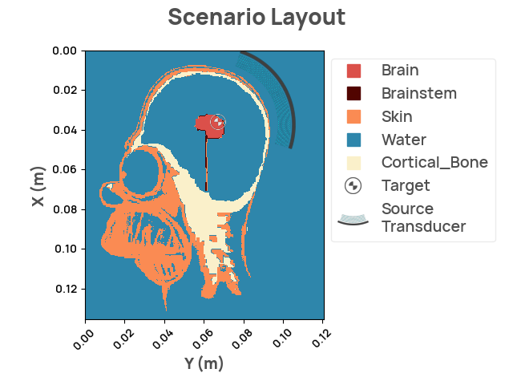
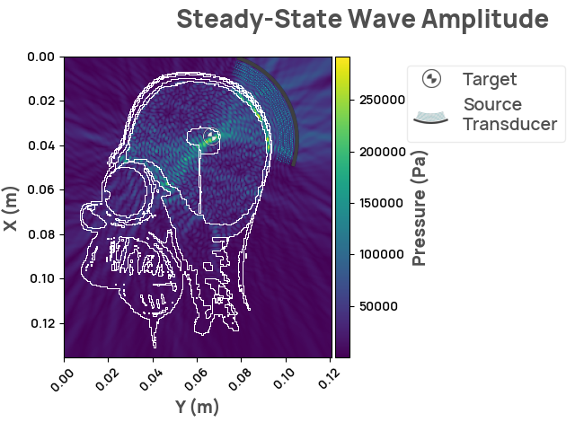

Note
Click here to download the full example code
Customizing head shape with Homer Simpson
For additional context, check out FixingHomer.com. TLDR: We take this fun image and show how flexible the NDK is for transcranial ultrasound simulation.
{kind=link}
The following step downloads and loads numpy material masks The masks were generated using in the image from fixinghomer.com
import numpy as np
import pooch
import neurotechdevkit as ndk
masks_url = "https://neurotechdevkit.s3.us-west-2.amazonaws.com/homer_masks.npz"
known_hash = "9f58e7d1f68f45466ee5fe848a83dd8eb676139672c44af5214231b3e3fe6fb9"
downloaded_file_path = pooch.retrieve(
masks_url, known_hash=known_hash, progressbar=True
)
with np.load(downloaded_file_path) as data:
masks = dict(data)
masks = {k: v.astype(np.bool_) for k, v in masks.items()}
Out:
0%| | 0.00/2.17M [00:00<?, ?B/s]
1%|▎ | 17.4k/2.17M [00:00<00:17, 125kB/s]
2%|▉ | 51.2k/2.17M [00:00<00:10, 195kB/s]
4%|█▌ | 86.0k/2.17M [00:00<00:09, 220kB/s]
5%|██ | 117k/2.17M [00:00<00:09, 221kB/s]
7%|██▋ | 153k/2.17M [00:00<00:08, 252kB/s]
10%|███▋ | 207k/2.17M [00:00<00:06, 282kB/s]
12%|████▌ | 252k/2.17M [00:00<00:06, 316kB/s]
15%|█████▋ | 315k/2.17M [00:01<00:05, 341kB/s]
17%|██████▋ | 374k/2.17M [00:01<00:04, 389kB/s]
20%|███████▊ | 437k/2.17M [00:01<00:04, 387kB/s]
24%|█████████▏ | 513k/2.17M [00:01<00:03, 435kB/s]
27%|██████████▍ | 585k/2.17M [00:01<00:03, 460kB/s]
31%|████████████▏ | 681k/2.17M [00:01<00:02, 529kB/s]
36%|█████████████▉ | 774k/2.17M [00:01<00:02, 572kB/s]
41%|███████████████▉ | 887k/2.17M [00:02<00:01, 643kB/s]
46%|█████████████████▊ | 990k/2.17M [00:02<00:01, 718kB/s]
52%|███████████████████▋ | 1.12M/2.17M [00:02<00:01, 795kB/s]
59%|██████████████████████▎ | 1.27M/2.17M [00:02<00:01, 834kB/s]
66%|████████████████████████▉ | 1.43M/2.17M [00:02<00:00, 915kB/s]
74%|███████████████████████████▏ | 1.60M/2.17M [00:02<00:00, 1.07MB/s]
82%|██████████████████████████████▎ | 1.78M/2.17M [00:02<00:00, 1.25MB/s]
88%|████████████████████████████████▌ | 1.91M/2.17M [00:02<00:00, 1.24MB/s]
95%|███████████████████████████████████▏ | 2.07M/2.17M [00:03<00:00, 1.33MB/s]
0%| | 0.00/2.17M [00:00<?, ?B/s]
100%|█████████████████████████████████████| 2.17M/2.17M [00:00<00:00, 5.68GB/s]
Setup the scenario using the NDK
extent = (
0.1355,
0.1205,
) # (x, y) in meters.
# This size matches the size of the image from fixinghomer.com at 272x242,
# given our other chosen parameters (`ppw` and `center_frequency`)
target_center = [0.036, 0.067] # target positioned on his brain
target_radius = 0.004
center_frequency = 5e5
# define the brainstem material (the other materials used here are standard in the NDK)
brainstem_mat = ndk.materials.Material(
vp=1540.0, rho=1000.0, alpha=0.001, render_color="#510400"
)
# adjust cortical bone properties to handle the unusual head shape and skull thickness
cortical_bone_mat = ndk.materials.Material(
vp=1800, rho=3350, alpha=2.37, render_color="#FAF0CA"
)
# Define the Scenario in 2 dimensions
scenario = ndk.scenarios.Scenario2D(
material_properties={
"brainstem": brainstem_mat,
"cortical_bone": cortical_bone_mat,
# the other materials are standard in the NDK
}
)
# specify the target marker
scenario.target = ndk.scenarios.Target(
target_id="target_1",
center=target_center,
radius=target_radius,
description="cortex, posterior",
)
Next, we add the source transducer.
source_position = [0.02, 0.1]
source_target = [0.037, 0.067]
source = ndk.sources.FocusedSource2D(
position=source_position,
direction=np.array(source_target) - np.array(source_position),
aperture=0.05,
focal_length=0.038,
num_points=1000,
)
# The failed scenario shown on fixinghomer.com is commented here for reference.
# failed_source_position=[0.08, 0.106]
# failed_source_target = [0.037, 0.067]
# failed_source = ndk.sources.FocusedSource2D(
# position=failed_source_position,
# direction=np.array(failed_source_target) - np.array(failed_source_position),
# aperture=0.04, # width of the source
# focal_length=0.06, #distance to focal point
# num_points=1000,
# )
scenario.sources = [source] # , failed_source]
scenario.origin = [0, 0]
scenario.material_outline_upsample_factor = 8
scenario.center_frequency = center_frequency # Hz
grid = ndk.grid.Grid.make_grid(
extent=extent, # m
speed_water=1500,
center_frequency=scenario.center_frequency,
ppw=6,
)
scenario.grid = grid
# confirm that the grid size matches the image size of 272x242
print("total voxels:")
print(grid.space.shape[0], grid.space.shape[1])
dx = grid.space.spacing[0]
scenario.material_masks = masks
Out:
Now, we are ready to review the layout, and run the simulation.

Set up the Problem
problem = ndk.problem.Problem(grid=grid)
problem.add_material_fields(
materials=scenario.materials,
masks=scenario.material_masks,
)
Rendering the simulation
scenario.problem = problem
result = scenario.simulate_steady_state()
assert isinstance(result, ndk.results.SteadyStateResult2D)
result.render_steady_state_amplitudes(show_material_outlines=True)

Out:
Estimated time to complete simulation: 52 seconds. Memory required is 8.128512230525773 GB (available 73.624408064 GB). These values are approximated.
/home/circleci/.cache/pypoetry/virtualenvs/neurotechdevkit-3aSsmiER-py3.10/lib/python3.10/site-packages/devito/finite_differences/differentiable.py:224: DeprecationWarning: NotImplemented should not be used in a boolean context
return super(Differentiable, self).__eq__(other) and\
/home/circleci/.cache/pypoetry/virtualenvs/neurotechdevkit-3aSsmiER-py3.10/lib/python3.10/site-packages/devito/finite_differences/differentiable.py:224: DeprecationWarning: NotImplemented should not be used in a boolean context
return super(Differentiable, self).__eq__(other) and\
gcc -O3 -g -fPIC -Wall -std=c99 -march=native -Wno-unused-result -Wno-unused-variable -Wno-unused-but-set-variable -ffast-math -shared -fopenmp /tmp/devito-jitcache-uid1001/5800f06382eac00db301260ceef0ff2ba66ea5f0.c -lm -o /tmp/devito-jitcache-uid1001/5800f06382eac00db301260ceef0ff2ba66ea5f0.so
We've successfully hit the target, and can proceed with treatment for Homer! FixingHomer.com
Total running time of the script: ( 0 minutes 38.395 seconds)
Download Python source code: plot_homer.py